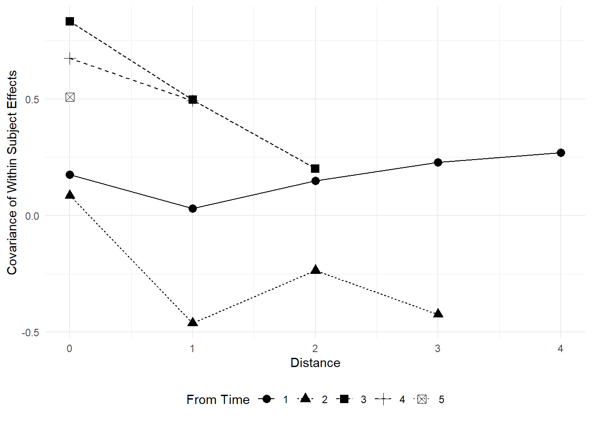

Day 22 Missing values
22.2 Missing data
- A meme
- Missing response vs. missing predictor
- Sources of uncertainty
Types of missing data
- Data missing completely at random (MCAR)
- no additional assumptions
- Data missing not at random
- certain values of outcomes or predictors are more likely to induce missingness
Types of imputation
Overall logic
“[I]nformation flows (…) from present data to missing data, as long as we are willing to make a model of the whole variable” McElreath, Statistical Rethinking.
- Multiple imputation
- Bayesian imputation
22.2.1 Bayesian imputation - MCAR Example
The data below come from a typical problem in agronomy/crop science: scientists wish to study the realtionship between Nitrogen content (N%) and biomass (W). Generally speaking, scientists consider a power function \[N_{i} = \alpha \cdot W_i^\beta,\] where:
- \(N_i\) is the N content of the \(i\)th sample,
- \(\alpha\) is the scale parameter of the power function,
- \(W_i\) is the biomass of the \(i\)th sample, and
- \(\beta\) is the shape parameter of the power curve.

Figure 22.1: Relationships between N uptake by aerial biomass and aerial biomass accumulation (W) in maize crops. Figure 6 in Plenet and Lemaire (2000).
A couple questions:
- Is this a statistical model?
- How can we make this a statistical model?
22.2.1.1 Applied example
library(tidyverse)
url <- "https://raw.githubusercontent.com/stat870/fall2025/refs/heads/main/data/N_W.csv"
df <- read.csv(url)
df |>
ggplot(aes(W_ton_ha, Nupt_kg_ha))+
geom_point(aes())+
theme_pubclean()+
labs(
x = expression(W~(Mg~ha^{-1})),
y = expression(N~uptake~(Mg~ha^{-1}))
)
## Sites Genotype Rep Nrates_kg_ha W_ton_ha Nupt_kg_ha Sampling_time
## 1 PPAC, Wanatah, IN 2M750 2 224 NA 0.011368 t1
## 2 PPAC, Wanatah, IN 2M750 3 224 NA 0.106960 t2
## 3 PPAC, Wanatah, IN 2T789 2 224 NA 0.116508 t2
## 4 PPAC, Wanatah, IN 2M750 1 224 NA 0.142486 t3
## 5 PPAC, Wanatah, IN 2M750 1 224 NA 0.192324 t4
## 6 PPAC, Wanatah, IN 2T789 3 224 NA 0.267631 t5
## 7 PPAC, Wanatah, IN 2T789 1 224 NA 0.279180 t5
## 8 PPAC, Wanatah, IN 2M750 2 224 NA 0.289454 t6
## 9 PPAC, Wanatah, IN 2M750 2 224 NA 0.254864 t6library(cmdstanr)
library(bayesplot)
library(ggpubr)
BI_model <- cmdstan_model("../scripts/missing_data.stan")
BI_model$print()## data {
## int<lower=0> N;
## int<lower=0> W_num_missing;
## vector[N] W;
## vector[N] y;
## array[N] int W_missing;
## }
##
## parameters {
## real alpha;
## real beta;
## real<lower=0> sigma;
## vector[W_num_missing] W_impute;
## real mu_W;
## real<lower=0> sigma_W;
## }
##
## model {
## vector[N] W_merged;
## alpha ~ normal(50, 10);
## beta ~ normal(1, 2);
## sigma ~ gamma(10,2);
##
## mu_W ~ normal(10, 6);
## sigma_W ~ gamma(4, 1);
##
##
## for (i in 1:N) {
## W_merged[i] = W[i];
## if ( W_missing[i] > 0 ) W_merged[i] = W_impute[W_missing[i]];
## }
## // imputation
## W_merged ~ normal(mu_W, sigma_W);
## for (i in 1:N){
## y[i] ~ normal(alpha * W_merged[i]^beta, sigma);
## }
## }W_missing <- as.numeric(is.na(df$W_ton_ha))
W_missing <- sapply(1:length(W_missing),
function(n) W_missing[n]*sum(W_missing[1:n]) )
W_missing## [1] 0 0 0 0 0 0 0 1 0 0 0 0 0 0 2 0 0 0 0 0 0 0 3 0 0 0 0 0 0 0 4 0 0 0 0 0 0 0
## [39] 0 0 0 0 5 0 0 0 0 0 0 0 0 0 0 6 0 0 0 7 0 0 0 8 0 0 0 0 0 9 0 0 0 0stan_data <- list(
N = nrow(df),
W_num_missing = sum(is.na(df$W_ton_ha)),
W = replace_na(df$W_ton_ha, 0),
y = df$Nupt_kg_ha,
W_missing = W_missing)
samples <- BI_model$sample(
data = stan_data,
seed = 33,
chains = 3,
cores = 3,
iter_warmup = 1500,
iter_sampling = 1000
)## Running MCMC with 3 parallel chains...## Chain 3 Iteration: 1 / 2500 [ 0%] (Warmup)## Chain 3 Iteration: 100 / 2500 [ 4%] (Warmup)
## Chain 3 Iteration: 200 / 2500 [ 8%] (Warmup)## Chain 3 Iteration: 300 / 2500 [ 12%] (Warmup)
## Chain 3 Iteration: 400 / 2500 [ 16%] (Warmup)
## Chain 3 Iteration: 500 / 2500 [ 20%] (Warmup)
## Chain 3 Iteration: 600 / 2500 [ 24%] (Warmup)## Chain 3 Iteration: 700 / 2500 [ 28%] (Warmup)## Chain 3 Iteration: 800 / 2500 [ 32%] (Warmup)
## Chain 3 Iteration: 900 / 2500 [ 36%] (Warmup)
## Chain 3 Iteration: 1000 / 2500 [ 40%] (Warmup)
## Chain 3 Iteration: 1100 / 2500 [ 44%] (Warmup)## Chain 3 Iteration: 1200 / 2500 [ 48%] (Warmup)## Chain 3 Iteration: 1300 / 2500 [ 52%] (Warmup)## Chain 3 Iteration: 1400 / 2500 [ 56%] (Warmup)
## Chain 3 Iteration: 1500 / 2500 [ 60%] (Warmup)
## Chain 3 Iteration: 1501 / 2500 [ 60%] (Sampling)
## Chain 3 Iteration: 1600 / 2500 [ 64%] (Sampling)## Chain 3 Iteration: 1700 / 2500 [ 68%] (Sampling)## Chain 3 Iteration: 1800 / 2500 [ 72%] (Sampling)
## Chain 3 Iteration: 1900 / 2500 [ 76%] (Sampling)## Chain 3 Iteration: 2000 / 2500 [ 80%] (Sampling)## Chain 3 Iteration: 2100 / 2500 [ 84%] (Sampling)
## Chain 3 Iteration: 2200 / 2500 [ 88%] (Sampling)
## Chain 3 Iteration: 2300 / 2500 [ 92%] (Sampling)## Chain 3 Iteration: 2400 / 2500 [ 96%] (Sampling)## Chain 3 Iteration: 2500 / 2500 [100%] (Sampling)## Chain 3 finished in 6.6 seconds.## The remaining chains had a mean execution time of 7.0 seconds.
fitted <- samples$summary(c("alpha", "beta"))
W_imputed <- samples$summary() |>
filter(str_detect(variable, "W_impute"))
W_imputed_mean <- c(NA,W_imputed$mean)
W_imputed_sd <- c(NA,W_imputed$sd)
merged_data <- data.frame(
W_ton_ha = df$W_ton_ha, y = df$Nupt_kg_ha, W_missing_id = factor(W_missing)) |>
mutate(W_merged =
ifelse(is.na(W_ton_ha),
W_imputed_mean[W_missing_id],
W_ton_ha),
W_sd =
ifelse(is.na(W_ton_ha),
W_imputed_sd[W_missing_id],
NA))
merged_data |>
ggplot(aes(W_merged, y))+
stat_function(fun = function(x){fitted$mean[1] * x ^ fitted$mean[2]})+
geom_errorbarh(aes(xmin = W_merged - W_sd, xmax = W_merged + W_sd ),
height = 0)+
geom_point(aes(fill = W_missing==0), shape = 21, show.legend = F)+
scale_fill_manual(values = c("white", "grey20"))+
theme_pubclean()+
labs(
x = expression(W~merged~(Mg~ha^{-1})),
y = expression(N~uptake~(Mg~ha^{-1}))
)
22.2.1.2 What if we didn’t have imputation and just dropped those rows?
## data {
## int<lower=0> N;
## vector[N] W;
## vector[N] y;
## }
##
## parameters {
## real alpha;
## real beta;
## real<lower=0> sigma;
## }
##
## model {
## alpha ~ normal(50, 10);
## beta ~ normal(1, 2);
## sigma ~ gamma(10,2);
## for (i in 1:N){
## y[i] ~ normal(alpha * W[i]^beta, sigma);
## }
## }df_small <- drop_na(df)
stan_data_small <- list(
N = nrow(df_small),
W = df_small$W_ton_ha,
y = df_small$Nupt_kg_ha)
samples_small <- small_model$sample(
data = stan_data_small,
seed = 33,
chains = 3,
cores = 3,
iter_warmup = 1500,
iter_sampling = 1000
)## Running MCMC with 3 parallel chains...
##
## Chain 1 Iteration: 1 / 2500 [ 0%] (Warmup)
## Chain 1 Iteration: 100 / 2500 [ 4%] (Warmup)
## Chain 1 Iteration: 200 / 2500 [ 8%] (Warmup)
## Chain 1 Iteration: 300 / 2500 [ 12%] (Warmup)## Chain 2 Iteration: 1 / 2500 [ 0%] (Warmup)
## Chain 2 Iteration: 100 / 2500 [ 4%] (Warmup)
## Chain 2 Iteration: 200 / 2500 [ 8%] (Warmup)## Chain 3 Iteration: 1 / 2500 [ 0%] (Warmup)
## Chain 3 Iteration: 100 / 2500 [ 4%] (Warmup)## Chain 1 Iteration: 400 / 2500 [ 16%] (Warmup)
## Chain 1 Iteration: 500 / 2500 [ 20%] (Warmup)
## Chain 1 Iteration: 600 / 2500 [ 24%] (Warmup)
## Chain 1 Iteration: 700 / 2500 [ 28%] (Warmup)
## Chain 1 Iteration: 800 / 2500 [ 32%] (Warmup)
## Chain 1 Iteration: 900 / 2500 [ 36%] (Warmup)
## Chain 1 Iteration: 1000 / 2500 [ 40%] (Warmup)
## Chain 1 Iteration: 1100 / 2500 [ 44%] (Warmup)
## Chain 1 Iteration: 1200 / 2500 [ 48%] (Warmup)
## Chain 1 Iteration: 1300 / 2500 [ 52%] (Warmup)
## Chain 1 Iteration: 1400 / 2500 [ 56%] (Warmup)
## Chain 1 Iteration: 1500 / 2500 [ 60%] (Warmup)
## Chain 1 Iteration: 1501 / 2500 [ 60%] (Sampling)
## Chain 1 Iteration: 1600 / 2500 [ 64%] (Sampling)
## Chain 1 Iteration: 1700 / 2500 [ 68%] (Sampling)
## Chain 1 Iteration: 1800 / 2500 [ 72%] (Sampling)
## Chain 1 Iteration: 1900 / 2500 [ 76%] (Sampling)
## Chain 1 Iteration: 2000 / 2500 [ 80%] (Sampling)
## Chain 1 Iteration: 2100 / 2500 [ 84%] (Sampling)
## Chain 1 Iteration: 2200 / 2500 [ 88%] (Sampling)
## Chain 2 Iteration: 300 / 2500 [ 12%] (Warmup)
## Chain 2 Iteration: 400 / 2500 [ 16%] (Warmup)
## Chain 2 Iteration: 500 / 2500 [ 20%] (Warmup)
## Chain 2 Iteration: 600 / 2500 [ 24%] (Warmup)
## Chain 2 Iteration: 700 / 2500 [ 28%] (Warmup)
## Chain 2 Iteration: 800 / 2500 [ 32%] (Warmup)
## Chain 2 Iteration: 900 / 2500 [ 36%] (Warmup)
## Chain 2 Iteration: 1000 / 2500 [ 40%] (Warmup)
## Chain 2 Iteration: 1100 / 2500 [ 44%] (Warmup)
## Chain 2 Iteration: 1200 / 2500 [ 48%] (Warmup)
## Chain 2 Iteration: 1300 / 2500 [ 52%] (Warmup)
## Chain 2 Iteration: 1400 / 2500 [ 56%] (Warmup)
## Chain 2 Iteration: 1500 / 2500 [ 60%] (Warmup)
## Chain 2 Iteration: 1501 / 2500 [ 60%] (Sampling)
## Chain 2 Iteration: 1600 / 2500 [ 64%] (Sampling)
## Chain 2 Iteration: 1700 / 2500 [ 68%] (Sampling)
## Chain 2 Iteration: 1800 / 2500 [ 72%] (Sampling)
## Chain 2 Iteration: 1900 / 2500 [ 76%] (Sampling)
## Chain 2 Iteration: 2000 / 2500 [ 80%] (Sampling)
## Chain 2 Iteration: 2100 / 2500 [ 84%] (Sampling)
## Chain 2 Iteration: 2200 / 2500 [ 88%] (Sampling)
## Chain 3 Iteration: 200 / 2500 [ 8%] (Warmup)
## Chain 3 Iteration: 300 / 2500 [ 12%] (Warmup)
## Chain 3 Iteration: 400 / 2500 [ 16%] (Warmup)
## Chain 3 Iteration: 500 / 2500 [ 20%] (Warmup)
## Chain 3 Iteration: 600 / 2500 [ 24%] (Warmup)
## Chain 3 Iteration: 700 / 2500 [ 28%] (Warmup)
## Chain 3 Iteration: 800 / 2500 [ 32%] (Warmup)
## Chain 3 Iteration: 900 / 2500 [ 36%] (Warmup)
## Chain 3 Iteration: 1000 / 2500 [ 40%] (Warmup)
## Chain 3 Iteration: 1100 / 2500 [ 44%] (Warmup)
## Chain 3 Iteration: 1200 / 2500 [ 48%] (Warmup)
## Chain 3 Iteration: 1300 / 2500 [ 52%] (Warmup)
## Chain 3 Iteration: 1400 / 2500 [ 56%] (Warmup)
## Chain 3 Iteration: 1500 / 2500 [ 60%] (Warmup)
## Chain 3 Iteration: 1501 / 2500 [ 60%] (Sampling)
## Chain 3 Iteration: 1600 / 2500 [ 64%] (Sampling)
## Chain 3 Iteration: 1700 / 2500 [ 68%] (Sampling)
## Chain 3 Iteration: 1800 / 2500 [ 72%] (Sampling)
## Chain 1 Iteration: 2300 / 2500 [ 92%] (Sampling)
## Chain 1 Iteration: 2400 / 2500 [ 96%] (Sampling)
## Chain 1 Iteration: 2500 / 2500 [100%] (Sampling)
## Chain 2 Iteration: 2300 / 2500 [ 92%] (Sampling)
## Chain 2 Iteration: 2400 / 2500 [ 96%] (Sampling)
## Chain 2 Iteration: 2500 / 2500 [100%] (Sampling)
## Chain 3 Iteration: 1900 / 2500 [ 76%] (Sampling)
## Chain 3 Iteration: 2000 / 2500 [ 80%] (Sampling)
## Chain 3 Iteration: 2100 / 2500 [ 84%] (Sampling)
## Chain 3 Iteration: 2200 / 2500 [ 88%] (Sampling)
## Chain 3 Iteration: 2300 / 2500 [ 92%] (Sampling)
## Chain 3 Iteration: 2400 / 2500 [ 96%] (Sampling)
## Chain 3 Iteration: 2500 / 2500 [100%] (Sampling)
## Chain 1 finished in 0.4 seconds.
## Chain 2 finished in 0.3 seconds.
## Chain 3 finished in 0.4 seconds.
##
## All 3 chains finished successfully.
## Mean chain execution time: 0.4 seconds.
## Total execution time: 0.6 seconds.

fitted_small <- samples_small$summary(c("alpha", "beta"))
df_small |>
ggplot(aes(W_ton_ha, Nupt_kg_ha))+
stat_function(fun = function(x){fitted_small$mean[1] * x ^ fitted_small$mean[2]})+
geom_point(aes(), shape = 21, fill = "grey20")+
theme_pubclean()+
labs(
x = expression(W~(Mg~ha^{-1})),
y = expression(N~uptake~(Mg~ha^{-1}))
)